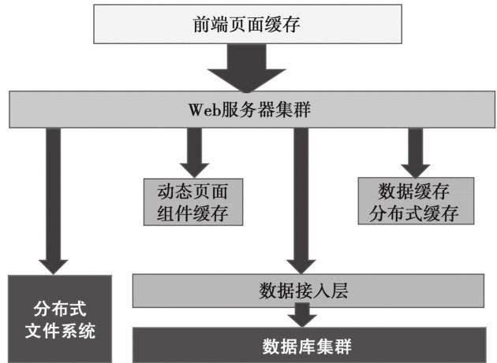
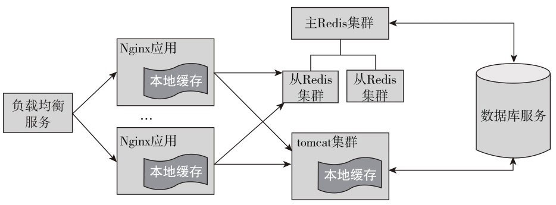
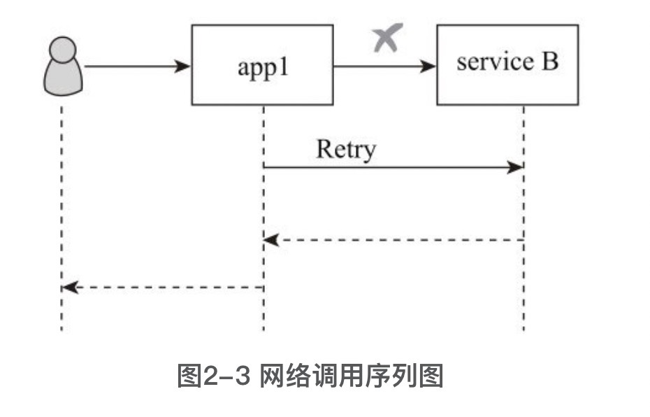

第1章 缓存为王
1.1 什么是缓存？
我们平时在编程的时候，接触到的都是虚拟地址而不是真实的物理地址，这是虚拟内存的主要功能之一。假如请求一个页的地址，需要将页的虚拟地址转化为页的物理地址。页表（pagetable）和内存管理单元（MMU）就负责将页的虚拟地址映射到物理地址。页表负责记录哪些是物理页，哪些是虚拟页，以及这些页的页表条目（PTE）。而MMU是一个物理硬件，MMU负责进行虚拟地址到物理地址的翻译，翻译过程中需要从页表获取页的PTE, MMU也会使用翻译后备缓存器（TLB）的缓存页号。可见，在操作系统层面都有缓存。
- 根据在软件系统中所处位置的不同，缓存大体可以分为三类：
- 客户端缓存；
- 服务端缓存；
- 网络中的缓存。
- 根据规模和部署方式缓存也可以分为：
- 单体缓存；
- 缓存集群；
- 分布式缓存。
1.2 为什么使用缓存？
关于系统的性能
- 系统性能的指标一般包括响应时间、延迟时间、吞吐量，并发用户数和资源利用率等几个方面。
- 响应时间是指系统对用户请求做出响应的时间
- 吞吐量是指系统在单位时间内处理请求的数量。
- 并发用户数是指系统可以同时承载的正常使用系统功能的用户数量。与吞吐量相比，并发用户数是一个更直观但也更笼统的性能指标。而资源利用率反映的是在一段时间内资源平均被占用的情况。
从浏览器到网络，再到应用服务器，甚至到数据库，通过在各个层面应用缓存技术，整个系统的性能将大幅提高
使用缓存技术，可以降低系统的响应时间，减少网络传输时间和应用延迟时间，进而提高了系统的吞吐量，增加了系统的并发用户数。
1.3 从网站的架构发展看缓存

1.4 客户端缓存
1.4.1 页面缓存
页面缓存有两层含义：一个是页面自身对某些元素或全部元素进行缓存；另一层意思是服务端将静态页面或动态页面的元素进行缓存，然后给客户端使用。
HTML5中使用本地缓存的方法也很简单，示例代码如下：
1 | localStorage.setItem() |
HTML5提供的离线应用缓存机制，使得网页应用可以离线使用，这种机制在浏览器上支持度非常广，可以放心地使用该特性来加速页面的访问。开启离线缓存的步骤如下：
- 1）准备用于描述页面需要缓存的资源列表清单文件（manifest text/cache-manifest）。
- 2）在需要离线使用的页面中添加manifest属性，指定缓存清单文件的路径。
1.4.2 浏览器缓存
浏览器缓存是根据一套与服务器约定的规则进行工作的，工作规则很简单：检查以确保副本是最新的，通常只要一次会话。
HTTP1.0提供了一些很基本的缓存特性。服务器侧设置Expires的HTTP头来告诉客户端在重新请求文件之前缓存多久是安全的，可以通过if-modified-since的条件请求来使用缓存。其中，发送的时间是文件最初被下载的时间，而不是即将过期的时间，如果文件没有改变，服务器可以用304-Not Modified来应答。客户端收到304代码，就可以使用缓存的文件版本了。
HTTP 1.1有了较大的增强，缓存系统被形式化了，引入了实体标签e-tag。e-tag是文件或对象的唯一标识，这意味着可以请求一个资源，以及提供所持有的文件，然后询问服务器这个文件是否有变化。如果某一个文件的e-tag是有效的，那么服务器会生成304-Not Modified应答，并提供正确文件的e-tag，否则，发送200-OK应答
Last-Modified/ETag与Cache-Control/Expires的作用是不一样的，如果检测到本地的缓存还在有效的时间范围内，浏览器则直接使用本地缓存，不会发送任何请求。两者一起使用时，Cache-Control/Expires的优先级要高于Last-Modified/ETag。即当本地副本根据Cache-Control/Expires发现还在有效期内时，则不会再次发送请求去服务器询问修改时间（Last-Modified）或实体标识（e-tag）了。
Cache-Control与Expires的功能一致，都是指明当前资源的有效期，控制浏览器是直接从浏览器缓存取数据还是重新发请求到服务器取数据。只不过Cache-Control的选择更多，设置更细致，如果同时设置的话，其优先级高于Expires。
一般情况下，使用Cache-Control/Expires会配合Last-Modified/ETag一起使用，因为即使服务器设置缓存时间，当用户点击“刷新”按钮时，浏览器会忽略缓存继续向服务器发送请求，这时Last-Modified/ETag将能够很好利用服务端的返回码304，从而减少响应开销。
1.4.3 APP上的缓存
APP可以将内容缓存在内存、文件或本地数据库（例如SQLite）中，但基于内存的缓存要谨慎使用。
1.5 网络中的缓存
网络中的缓存位于客户端和服务端之间，代理或响应客户端的网络请求，从而对重复的请求返回缓存中的数据资源。同时，接受服务端的请求，更新缓存中的内容。
1.5.1 Web代理缓存
Web代理几乎是伴随着互联网诞生的，常用的Web代理分为正向代理、反向代理和透明代理。Web代理缓存是将Web代理作为缓存的一种技术。
反向代理与正向代理相反，对于客户端而言代理服务器就像是源服务器，并且客户端不需要进行设置。客户端向反向代理发送普通请求，接着反向代理将判断向何处转发请求，并将从源服务器获得的内容返回给客户端。
透明代理的意思是客户端根本不需要知道有代理服务器的存在，由代理服务器改变客户端请求的报文字段，并会传送真实的IP地址。
加密的透明代理属于匿名代理，不用设置就可以使用代理了。透明代理的例子就是时下很多公司使用的行为管理软件。
对于Web代理缓存而言，较流行的是Squid，它支持建立复杂的缓存层级结构，拥有详细的日志、高性能缓存以及用户认证支持
1.5.2 边缘缓存
如果这些反向代理服务器能够做到和用户来自同一个网络，那么用户访问反向代理服务器，就会得到很高质量的响应速度，所以可以将这样的反向代理缓存称为边缘缓存。
边缘缓存在网络上位于靠近用户的一侧，可以处理来自不同用户的请求，主要用于向用户提供静态的内容，以减少应用服务器的介入
边缘缓存中典型的商业化服务就是CDN了
CDN边缘节点的缓存策略因服务商不同而有所变化，但一般都会遵循HTTP标准协议，通过HTTP响应头中的Cache-control: max-age的字段来设置CDN边缘节点的数据缓存时间
一般地，CDN边缘节点对开发者来说是透明的，开发者可以通过CDN服务商提供的“刷新缓存”接口来清理位于CDN边缘节点上的缓存数据
1.6 服务端缓存
1.6.1 数据库缓存
数据库缓存是一类特殊的缓存，是数据库自身的缓存机制。
大多数数据库不需要配置就可以快速运行，但并没有为特定的需求进行优化。在数据库调优的时候，缓存优化是一项很重要的工作。
- MySQL的查询缓存
Query cache作用于整个MySQL实例，主要用于缓存MySQL中的ResultSet，也就是一条SQL语句执行的结果集，所以仅仅只能针对select语句。
- Query Cache的使用需要多个参数配合，其中最为关键的是query_cache_size和query_cache_type，前者设置用于缓存ResultSet的内存大小，后者设置在何种场景下使用Query Cache。这可以通过计算Query Cache的命中率来进行调整。query_cache_type可以设置为0（OFF）,1（ON）或者2（DEMAND），分别表示完全不使用Query Cache，除显式要求不使用Query Cache之外的所有select都使用Query Cache，以及只有显式要求才使用Query Cache。
2．检验Query Cache的合理性
1 | show variables like '%query_cache%'; |
通过调节以下几个参数可以知道query_cache_size设置得是否合理：
- Qcache inserts
- Qcache hits
- 如果Qcache_hits的值非常大，则表明查询缓冲使用非常频繁，如果该值较小反而会影响效率，那么可以考虑不用查询缓存；
- Qcache lowmem prunes
- 如果Qcache_lowmem_prunes的值非常大，则表明经常出现缓冲不够的情况
- Qcache free blocks
- Qcache_free_blocks值非常大，则表明缓存区中的碎片很多，可能需要寻找合适的机会进行整理。
其中Qcache_hits表示多少次命中，通过这个参数我们可以查看到Query Cache的基本效果；而Qcache_inserts表示多少次未命中然后插入。通过“Qcache_hits”和“Qcache_inserts”两个参数可以算出Query Cache的命中率：
1 | Query Cache 命中率=Qcache_hits/(Qcache_hits + Qcache_inserts) |
Qcache_lowmem_prunes表示多少条Query因为内存不足而被清除出Query Cache。通过Qcache_lowmem_prunes和Qcache_free_memory相互结合，能够更清楚地了解到系统中Query Cache的内存大小是否真的足够，是否频繁的出现因为内存不足而有Query被换出的情况。
- InnoDB的缓存性能
当使用InnoDB存储引擎的时候，innodb_buffer_pool_size参数可能是影响性能的最为关键的一个参数了，用来设置用于缓存InnoDB索引及数据块的内存区域大小，更像是Oracle数据库的db_cache_size
可以通过(Innodb_buffer_pool_read_requests - Innodb_buffer_pool_reads) /Innodb_buffer_pool_read_requests*100%计算缓存命中率，并根据命中率来调整innodb_buffer_pool_size参数大小进行优化
table_cache是一个非常重要的MySQL性能参数，主要用于设置table高速缓存的数量。由于每个客户端连接都会至少访问一个表，因此该参数与max_connections有关。
在执行缓存操作之前，table_cache参数用于限制缓存表的最大数目：如果当前已经缓存的表未达到table_cache数目，则会将新表添加进来；若已经达到此值，MySQL将根据缓存表的最后查询时间、查询率等规则释放之前的缓存。
1.6.2 平台级缓存
平台级缓存在这里指的是用来写带有缓存特性的应用框架，或者可用于缓存功能的专用库（如PHP中的Smarty模板库）。
在Java语言中，缓存框架更多，例如Ehcache, Cacheonix, Voldemort, JBoss Cache,OSCache等等。
1.6.3 应用级缓存
应用级缓存，需要开发者通过代码来实现缓存机制。这里是NoSQL的胜场，不论是Redis还是MongoDB，以及Memcached都可以作为应用级缓存的重要技术。一种典型的方式是每分钟或一段时间后统一生成某类页面存储在缓存中，或者可以在热数据变化时更新缓存。
1．面向Redis的缓存应用
Redis集群采用无中心节点方式实现，无需proxy代理，客户端直接与Redis集群的每个节点连接，根据同样的哈希算法计算出key对应的slot，然后直接在slot对应的Redis上执行命令。在Redis看来，响应时间是最苛刻的条件，增加一层带来的开销是不能接受的。因此，Redis实现了客户端对节点的直接访问，为了去中心化，节点之间通过Gossip协议交换相互的状态，以及探测新加入的节点信息
所有的Redis节点通过PING-PONG机制彼此互联，内部使用二进制协议优化传输速度和带宽。节点故障是通过集群中超过半数的节点检测失效时才会生效。
2．多级缓存实例
多级缓存示例

3．缓存算法
在实现缓存应用的时候，需要了解缓存技术中的几个术语。
- 缓存命中：当客户发起一个请求时，系统接收到这个请求，如果该请求的数据是在缓存中，这一数据就会被使用，这一行为叫作缓存命中。
- 没有命中：cache miss是没有命中。如果缓存中还有存储空间，那么没有命中的对象会被存储到缓存中来。
- 存储成本：当没有缓存命中时，系统会从数据库或其他数据源取出数据，然后放入缓存。而把这个数据放入缓存所需要的时间和空间，就是存储成本。
- 缓存失效：当存储在缓存中的数据需要更新时，就意味着缓存中的这一数据失效了。❑ 替代策略：当缓存没有命中时，并且缓存容量已经满了，就需要在缓存中去除一条旧数据，然后加入一条新数据，而到底应该去除哪些数据，就是由替代策略决定的。
替代策略的具体实现就是缓存算法，这里简要介绍一下主流的缓存算法：
- （1）Least-Recently-Used（LRU）
- 替换掉最近被请求最少的对象，这种传统策略在实际中应用最广。
- 在CPU缓存淘汰和虚拟内存系统中效果很好。然而在直接应用与代理缓存中效果欠佳，因为Web访问的时间局部性常常变化很大。
- 浏览器就一般使用了LRU作为缓存算法。新的对象会被放在缓存的顶部，
- （2）Least-Frequently-Used（LFU）
- 替换掉访问次数最少的缓存，这一策略意图是保留最常用的、最流行的对象，替换掉很少使用的那些数据。
- （3）Least Recently Used 2（LRU2）
- LRU的变种，把被两次访问过的对象放入缓存池，当缓存池满了之后，会把有两次最少使用的缓存对象去除。因为需要跟踪对象2次，访问负载就会随着缓存池的增加而增加。
- （4）Two Queues（2Q）
- Two Queues是LRU的另一个变种，把被访问的数据放到LRU的缓存中，如果这个对象再一次被访问，就把他转移到第二个、更大的LRU缓存，使用了多级缓存的方式。去除缓存对象是为了保持第一个缓存池是第二个缓存池的1/3。当缓存的访问负载是固定的时候，把LRU换成LRU2，就比增加缓存的容量更好。
- （5）SIZE
- 替换占用空间最大的对象，这一策略通过淘汰一个大对象而不是多个小对象来提高命中率。不过，可能有些进入缓存的小对象永远不会再被访问。SIZE策略没有提供淘汰这类对象的机制，也会导致“缓存污染”。
- （6）LRU-Threshold
- 不缓存超过某一size的对象，其他与LRU相同。
- （7）Log(Size)+LRU
- 替换size最大的对象，当size相同时，按LRU进行替换。
- （8）Hyper-G
- LFU的改进版，同时考虑上次访问时间和对象size。
- （9）Pitkow/Recker
- 替换最近最少使用的对象，除非所有对象都是今天访问过的。如果是这样，则替换掉最大的对象。这一策略试图符合每日访问Web网页的特定模式。这一策略也被建议在每天结束时运行，以释放被“旧的”、最近最少使用的对象占用的空间。
- （10）Lowest-Latency-First
- 替换下载时间最少的文档。显然它的目标是最小化平均延迟。
- （11）Hybrid Hybrid
- 有一个目标是减少平均延迟。对缓存中的每个文档都会计算一个保留效用，保留效用最低的对象会被替换掉
- （12）Lowest Relative Value（LRV）
- LRV也是基于计算缓存中文档的保留效用，然后替换保留效用最低的文档。
- （13）Adaptive Replacement Cache（ARC）
- ARC介于LRU和LFU之间，为了提高效果，由2个LRU组成，第一个包含的条目是最近只被使用过一次的，而第二个LRU包含的是最近被使用过两次的条目，因此，得到了新的对象和常用的对象。ARC能够自我调节，并且是低负载的。
- （14）Most Recently Used（MRU）
- MRU与LRU是相对，移除最近最多被使用的对象。当一次访问过来的时候，有些事情是无法预测的，并且在缓存系统中找出最少最近使用的对象是一项时间复杂度非常高的运算，这时会考虑MRU，在数据库内存缓存中比较常见。
- （15）First in First out（FIFO）
- FIFO通过一个队列去跟踪所有的缓存对象，最近最常用的缓存对象放在后面，而更早的缓存对象放在前面，当缓存容量满时，排在前面的缓存对象会被踢走，然后把新的缓存对象加进去。
- （16）Random Cache
- 随机缓存就是随意的替换缓存数据，比FIFO机制好，在某些情况下，甚至比LRU好，但是通常LRU都会比随机缓存更好些。
4．使用公有云的缓存服务
基于Redis的云存储服务
- 动态扩容
- 数据多备
- 自动容灾
- 成本较低
第2章 分布式系统理论
分布式理论体系宏大精深，先从分布式系统理论，比如Paxos、分布式系统设计策略、心跳检测、分布式系统设计实践、全局ID生成几个方面讲。
2.1 分布式系统概论
深入地讨论了以下几个方面：
- 分布式程序设计语言：基本结构。
- 理论基础：全局状态和事件排序；逻辑时钟和物理时钟。
- 分布式操作系统：互斥和选举；死锁的检测和解决方法；自稳定；任务调度和负载平衡。
- 分布式通信：一对一通信；组（collective）通信。
- 可靠性：一致性；错误恢复；可靠通信。
- 分布式数据管理：复制数据的一致性；分布式并发控制。
- 应用：分布式操作系统；分布式文件系统；分布式数据库系统；分布式共享存储器；异型处理。
综上所述，分布式系统是一个内涵极度丰富的领域，单就应用层次而言就涉及分布式缓存、分布式存储、分布式文件系统、分布式锁、分布式事务、分布式调度任务、分布式调度计算、分布式消息、分布式采集等等，
2.2 分布式系统概念
2.2.1 进程与线程
进程是具有一定独立功能的程序关于某个数据集合上的一次运行活动，进程是系统进行资源分配和调度的一个独立单位。
线程是进程的一个实体，是CPU调度和分派的基本单位，它是比进程更小的能独立运行的基本单位。线程自己基本上不拥有系统资源，只拥有一点在运行中必不可少的资源（如程序计数器、一组寄存器和栈），但是它可与同属一个进程的其他的线程共享进程所拥有的全部资源。
2.2.2 并发
当有多个线程在操作时，如果系统只有一个CPU，则它根本不可能真正同时进行一个以上的线程，它只能把CPU运行时间划分成若干个时间段，再将时间段分配给各个线程执行，在一个时间段的线程代码运行时，其他线程处于挂起状态。这种方式我们称之为并发（Concurrent）。
应用层的并发：定义为单位时间内对于共享资源的访问。
2.2.3 锁
锁（lock）作为用于保护临界区（critical section）的一种机制，被广泛应用在多线程程序中
减少或规避锁争用的几种策略：
- 分拆锁；
- 分离锁；
- 避免共享变量缓存；
- 使用并发容器如Amino；
- 使用Immutable数据和ThreadLocal中的数据
2.2.4 并行
当系统有一个以上的CPU时，则线程的操作有可能非并发。当一个CPU执行一个线程时，另一个CPU可以执行另一个线程，两个线程互不抢占CPU资源，可以同时进行，这种方式我们称之为并行（Parallel）。
并发与并行的区别
- 并行是指两个或者多个事件在同一时刻发生；
- 并发是指两个或多个事件在同一时间间隔内发生。
2.2.5 集群
集群是一组相互独立的、通过高速网络互联的计算机，它们构成了一个组，并以单一系统的模式加以管理。
分布式系统可以表达为很多机器组成的集群，靠彼此之间的网络通信，担当的角色可能不同，共同完成同一件事情的系统
可以划分为以下几种类型：
- 节点：系统中按照协议完成计算工作的一个逻辑实体，可能是执行某些工作的进程或机器。
- 网络：系统的数据传输通道，用来彼此通信。通信是具有方向性的。
- 存储：系统中持久化数据的数据库或者文件存储。
根据典型的集群体系结构，集群中涉及的关键技术可以归属于四个层次：
- 网络层：网络互联结构、通信协议、信号技术等。
- 节点机及操作系统层高性能客户机、分层或基于微内核的操作系统等。
- 集群系统管理层：资源管理、资源调度、负载平衡、并行IPO、安全等。
- 应用层：并行程序开发环境、串行应用、并行应用等
2.2.6 状态特性
分布式环境中的任何节点（Node）也是无状态的。无状态是指不保存存储状态，则可以随意重启和替代，便于做扩展。
2.2.7 系统重发与幂等性
系统重发示例

所谓幂等性就是调用1次和调用N次要返回一样的结果。
比如一次转账动作，A账户转账1000到B账户，由于网络调用超时，客户端client基于上述保障成功率的原因发起了retry，那么最终应该转账1000还是2000呢，客户的意愿是1000。只需要在设计上加上调用订单号就可以规避这个问题，多次重发，调用的订单号一样，则在服务提供方内部只做一次真实转账动作就行了。
2.2.8 硬件异常
1．服务器宕机
引发服务器宕机的原因可能是服务器停电、内存错误等等故障，换言之，服务器故障是大概率事件。
在分布式环境下，采用低廉的PC Server代替高大上的服务器已是常态。我们把宕机时不能提供服务的节点，称为不可用。
服务器宕机时，节点将丢失所有内部信息，因此设计时需要考虑存储系统的持久化，在重启系统后，可以进行相关存储内容的恢复
2．网络异常
网络异常的原因可能是消息丢失、网络包数据错误。
设计容错系统的一个方案是，任何消息只有收到对方回复才可以认为发送成功。
3．磁盘故障
在分布式环境中，需要把数据存储在多台服务器，一旦一台出现故障，也能从其他服务器恢复。
4．机房级异常
对容灾而言也有同城灾备和异地机房的做法。当发生机房级异常比如光纤出了问题，异地机房可以继续提供服务
2.3 分布式系统理论
CAP理论提出了一致性、可用性、分区容忍性的取舍问题；
Paxos、Raft、2PC、3PC分别给出了一致性的解决方案；
Lease机制主要针对网络拥塞或瞬断的情况下，出现双主情况的解法；
Quorum NWR和MVCC主要解决分布式存储领域的一致性问题；
Gossip是一种去中心化、容错而又最终一致性的算法
2.3.1 CAP理论
分布式系统的CAP理论：首先将分布式系统中的三个特性进行如下归纳：
- 一致性（C）：在分布式系统中的所有数据备份，在同一时刻是否有同样的值。（等同于所有节点访问同一份最新的数据副本）
- 可用性（A）：在集群中一部分节点故障后，集群整体是否还能响应客户端的读写请求。（对数据更新具备高可用性）
- 分区容忍性（P）：以实际效果而言，分区相当于对通信的时限要求。系统如果不能在一定时限内达成数据一致性，就意味着发生了分区的情况，必须就当前操作在C和A之间做出选择。
（1）CA without P
如果不要求P（不允许分区），则C（强一致性）和A（可用性）是可以保证的。
CA的系统更多的是允许分区后各子系统依然保持CA。
典型放弃分区容忍性的例子有关系型数据库、LDAP等。
（2）CP without A
如果不要求A（可用性），相当于每个请求都需要在Server之间强一致，而P（分区）会导致同步时间无限延长，如此CP也是可以保证的
（3）AP wihtout C
要高可用并允许分区，则需放弃一致性。一旦分区发生，节点之间可能会失去联系，为了高可用，每个节点只能用本地数据提供服务，而这样会导致全局数据的不一致性
现在众多的NoSQL都属于此类
2.3.3 Paxos
- Paxos是什么
一言以蔽之，Paxos协议是一个解决分布式系统中，多个节点之间就某个值（提案）达成一致（决议）的通信协议。它能够处理在少数节点离线的情况下，剩余的多数节点仍然能够达成一致。
- Paxos协议简介
Paxos协议是一个两阶段协议，分为Prepare阶段和Accept阶段
Proposer是提议提案的服务器，而Acceptor是批准提案的服务器。二者在物理上可以是同一台机器。
- Prepare阶段（1）Prepare阶段1:Proposer发送Prepare
2.3.4 2PC
在事务处理、关系型数据库及计算机网络中，2阶段提交协议（2PC）是一种典型的原子提交协议（atomic commitment protocol）。它是一种由协调器来处理分布式原子参与者是提交或者回滚事务的分布式算法。
该协议包括2个阶段：
- （1）提交请求阶段或者叫投票阶段该阶段的任务是确定相关参与者对于事务处理是否准备就绪，YES代表可以commit, NO则反之。
- （2）提交阶段基于投票结果，由协调器决定提交事务抑或是退出事务处理；各事务参与者遵循指示，对本地事务资源做需要的动作。
2.3.5 3PC
第一阶段，投票，事务协调器询问参与者是否能提交（canCommit），都得到肯定回答后，继续第二阶段。
第二阶段是预提交，都确认预提交成功后，进行第三阶段。
第三阶段就是真实的提交，成功则完成事务；失败则继续重试
2.3.6 Raft
在Raft中，任何时候一个服务器可以扮演下面角色之一：
- 领导者：处理所有客户端交互、日志复制等动作，一般一次只有一个领导者。
- 选民：类似选民，完全被动的角色，这样的服务器等待被通知投票。
- 候选人：候选人就是在选举过程中提名自己的实体，一旦选举成功，则成为领导者。
2.3.7 Lease机制
Lease英文含义是“租期”、“承诺”
2.3.8 解决“脑裂”问题
主备是实现高可用的有效方式，但存在一个脑裂问题。脑裂（split-brain），指在一个高可用（HA）系统中，当联系着的两个节点断开联系时，本来为一个整体的系统，分裂为两个独立节点，这时两个节点开始争抢共享资源，结果会导致系统混乱，数据损坏
有一种做法称为设置仲裁机制，例如设置第三方检测服务器（Monitor），当Slave确定准备接管Master时，让Monitor也ping一下Master，如果没有通讯，则判断其“死亡”；同时Master在对外提供服务时，每隔一段时间比如10s由Master服务器ping Slave服务器和Monitor，如果均出现异常，则暂定业务操作，重试。重试多次之后则退出程序执行或者执行服务器重启操作。
2.3.9 Quorum NWR
NWR是一种在分布式存储系统中用于控制一致性级别的一种策略。在Amazon的Dynamo云存储系统中，就应用NWR来控制一致性
- N：同一份数据的拷贝份数；
- W：是更新一个数据对象的时候需要确保成功更新的份数；
- R：读取一个数据需要读取的拷贝的份数。
2.3.10 MVCC
MVCC，全称Multiversion concurrency control，翻译为基于多版本并发控制。人们一般把基于锁（比如行级锁）的并发控制机制称成为悲观机制，而把MVCC机制称为乐观机制.
由于MVCC是一种宽松的设计，读写相互不阻塞，可以获得较好的并发性能。
2.3.11 Gossip
Gossip就是一种去中心化思路的分布式协议，解决状态在集群中的传播和状态一致性的保证两个问题
Gossip的核心是在去中心化结构下，通过信息的部分传递，达到全集群的状态信息传播，传播的时间收敛在O(Log(N))以内，其中N是节点的数量。同时基于Gossip协议，可以构建出状态一致的各种解决方案。